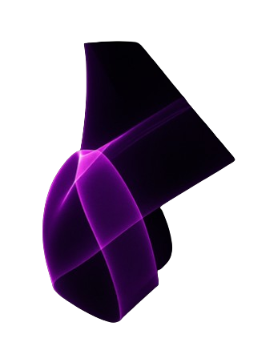
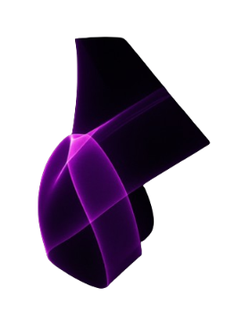

Frequently Asked Questions
What is CryptoSight and what does it do?
CryptoSight is a cutting-edge AI platform designed to transform how you engage with cryptocurrency markets. It harnesses real-time data, advanced machine learning models, and sentiment analysis to deliver intelligent insights, trend forecasts, and data-driven recommendations — empowering you to make smarter, faster trading decisions.
How does CryptoSight’s AI technology work behind the scenes?
Our proprietary AI models continuously ingest live market data, global news feeds, social sentiment signals, and blockchain metrics. Using deep learning algorithms, we detect hidden patterns, assess volatility, and forecast potential price movements. The result: accurate, real-time intelligence, packaged in an intuitive, easy-to-navigate interface for traders of all levels.
Which cryptocurrencies does CryptoSight currently support?
CryptoSight supports a growing ecosystem of cryptocurrencies, including Bitcoin (BTC), Ethereum (ETH), Solana (SOL), Cardano (ADA), and hundreds of leading and emerging altcoins. We update our coverage dynamically, ensuring you always have insights on the assets that matter most.
What types of insights and analysis can I expect?
We offer a powerful suite of analytics, including: Sentiment Scores: Real-time measurement of positive, negative, and neutral market sentiment. Price Trend Forecasts: AI-generated projections for price directions and volatility. Side-by-Side Coin Comparisons: Analyze performance, sentiment, risk, and market fundamentals. Custom Alerts: Stay informed on major shifts, spikes, or anomalies that could impact your trades.
Is CryptoSight secure? Will my personal information be safe?
Absolutely. We prioritize your security at every level. CryptoSight does not require you to upload private keys, wallet addresses, or personal financial information. All interactions are secured using industry-grade encryption and our systems undergo regular audits to maintain the highest security standards.
How is market sentiment calculated by CryptoSight?
Our AI models utilize Natural Language Processing (NLP) to scan millions of data points from news articles, crypto forums, social media platforms, and technical reports. Sentiment is scored based on linguistic tone, engagement levels, and emerging narratives — providing you with a real-time emotional barometer of the crypto market.
Do I need to upload any external data to use CryptoSight?
No uploads required. CryptoSight is fully autonomous — it aggregates public data sources, analyses them through our proprietary models, and delivers actionable insights to your dashboard without asking for any external inputs from you.
Can I trust CryptoSight’s AI insights for my trading decisions?
CryptoSight is built to enhance, not replace, human decision-making. While our models deliver high-accuracy predictions validated through extensive backtesting, we recommend using our insights as part of a broader, informed trading strategy. Always consider market risks before investing.
Can I compare different cryptocurrencies side by side?
Yes, CryptoSight’s comparison tool lets you analyze two or more cryptocurrencies simultaneously. Compare metrics like market sentiment, volatility, social trends, historical performance, and predictive forecasts — all within a single intuitive dashboard.
Will CryptoSight eventually offer direct trading or portfolio management?
We are working towards exciting future updates. While CryptoSight currently focuses on insights and analytics, upcoming releases will integrate trading APIs, portfolio tracking, and smart automation tools — delivering an even more powerful crypto trading experience.
Is CryptoSight available on mobile devices?
Yes. CryptoSight is fully responsive and accessible on desktops, tablets, and smartphones, ensuring you can access market insights anytime, anywhere.
How much does it cost to use CryptoSight?
Yes, We offer a Free Tier with access to essential features. Advanced analytics, custom alerts, and priority insights are available through our Premium Membership plans, designed to fit every type of crypto enthusiast — from beginners to seasoned investors..
 

.png)